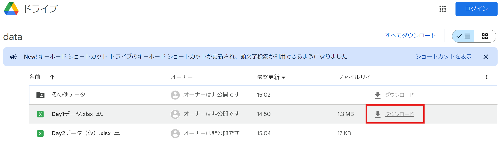

身の回りのデータから新しい発見をしよう
わからないこと、
疑問等ありましたら質問してください！
👉データ分析スキルは、将来の学習や仕事に役立ちます！💼
データを収集・分析・解釈し問題解決や意思決定に役立てる学問です 💡
ビジネス
売上予測、顧客分析 📈
医療
病気診断、新薬開発 🏥
スポーツ
選手分析、戦術策定 ⚽
環境
環境問題分析
対策立案 🌳
私たちは毎日データの恩恵を受けています！😊
アンケート結果を分析することで、
意見や傾向を把握できます 👥
オープンデータとは・・・
誰でも自由に利用できるデータのこと
興味のあるデータを探してみましょう！🔍
多くの場合、CSVファイルでデータが提供されています 📄
GoogleDriveにすべて保存しています。今回は「Day1データ」を使用します
ダウンロードしましょう!🐱
わからないことがありましたら質問してください！
SUM(): 合計を計算 ➕AVERAGE(): 平均を計算 📊COUNT(): データの数を数える 🔢MAX(): 最大値を見つける ⬆️MIN(): 最小値を見つける ⬇️データの基本的な特徴を把握できます 📈
👉シートで練習「基礎演習１」
データの中で最も頻繁に現れる値
例：{2, 3, 3, 4, 5, 3, 6} の最頻値は 3
注意：最頻値が複数ある場合もあります
Excelでの計算：
=MODE.SNGL(A1:A7)👉シートで練習「基礎演習２」
IF(): 条件分岐 🔀VLOOKUP(): 縦方向の検索 🔍CONCATENATE(): 文字列の結合 🔗LEFT(), RIGHT(), MID(): 文字列の抽出これらの関数を組み合わせることで、より複雑な分析も可能になります
👉シートで練習「基礎演習３」
WEBSERVICE関数を使うと、WebサービスのデータをExcelに直接取り込めます
=WEBSERVICE("https://api.example.com/data")
注意：セキュリティ設定によっては、この機能が制限されている場合があります 🔒
OpenWeatherMap APIを使って天気データを取得する例：
=WEBSERVICE("https://api.openweathermap.org/data/2.5/forecast?q=Tokyo&appid=f53a4fac44af40b32465203aab2cb37e&units=metric")
このAPIで東京の1週間の天気予報データを取得できます 🗼🌤️
👉シートで練習「基礎演習４」
この流れを意識しながら、実際にデータを分析してみましょう！
RESASからCSVデータをダウンロードしよう！
👉シートで練習「応用演習1」
気象庁のオープンデータを使って、
以下の分析を行ってみましょう！
👉シートで練習「ミッション」
実際のデータは完璧ではありません。以下の作業が必要です：
外れ値・・・異常に大きいまたは小さい数値のこと
これからも身の回りのデータに注目し、分析する習慣をつけましょう！🕵️♀️🔍
ここまでの内容で、分からないことや興味を持ったことはありますか？🙋♀️🙋♂️
GoogleDriveにすべて保存しています。今回は「Day2データ」を使用します
ダウンロードしましょう!🐱
わからないこと、
疑問等ありましたら質問してください！
統計に関する質問です！答えてみてね！
Excelの関数を使ってさらに分析の知識を知ろう！
2種類の数値の一つを横の軸に、もう一つを縦の軸にそれぞれ対応させて、平面上に点(ドット）を打って表す図
一方が増加すると、他方が直線的に増加または減少する傾向があるとき、二つの量の間には「相関」があるといいます
相関を数値で表したものを「相関係数」と呼んでいます。
北海道
秋田県
千葉県
和歌山県
鳥取県
仮説とは「ある現象を合理的に説明するため、仮に立てる説」
結論とは「考えたり論じたりして最終的な判断をまとめること」
以下の演習を行ってみましょう：
詳しくは👉ファイル名「Day2」 シート：応用演習１
詳しくは👉ファイル名「Day2」 シート：応用演習1おまけ
とどらんをつかって他の都道府県ごとのデータを調べてみよう！
👉ファイル名「Day2」 シート：応用演習２
テーマを１つ決めて分析してみよう！！
👉「ミッション」
この２日間を振り返ってみていかがでしたか？
データ分析は難しいことではなく、だれでもできる技術です。
将来的にもデータを客観的に見て分析できる人が求められます！
今回のレッスンを通してちょっとでも「データ分析」「データサイエンス」って面白そう！と思ってくれたら嬉しいです😊